You
watched
saved
forgot
it.
>openwiki
Compile it.
Your AI starts from zero.
That's one question.
Without a wiki, the agent reads the raw files for
“What does Paul Graham say about doing things that don't scale?”
0tokens
0 files read
Point it at
a video.a playlist.a channel.a blog.your notes.all of it.
0Y Combinator videos
$ openwiki youtube --channel @ycombinator --folder "Y Combinator"
✓887 transcripts · listed without an API key
$ openwiki essay --source paulgraham
✓233 essays
$ openwiki ingest --all
0 pages
0Paul Graham essays
Y Combinator/-7Qz7tSTfUU.txt
Dylan Field: Scaling Figma and the Future of Design
[0:01]to have folks that are designers step
[0:04]into the founder role and start companies.
[0:05]It feels intuitively like
[0:08]we're in the MS DOS era of AI right now.
✓ Quote found in the transcript at [0:05]
DF
Person
Dylan Field
entities/dylan-field.md
4 sources link here
F
Company
Figma
entities/figma.md
19 sources link here
#
Topic
Entrepreneurship
topics/entrepreneurship.md
41 sources link here
Verified quote · [0:05]
“It feels intuitively like we're in the MS DOS era of AI right now.”
youtube.com/watch?v=-7Qz7tSTfUU&t=5s
Every person, company and idea gets a page.
Founder Book · built with OpenWiki
0
Linked Markdown pages
from 1,219 YC and founder videos and 354 essays
The same 3 questions, measured on Founder Book
8× fewer tokens.
Reading the raw transcripts
0tokens
Reading the OpenWiki pages
0tokens
Your agent reads the page, not the pile.
$ openwiki ask "What does default alive mean?"
"Default alive" is a concept created by Paul Graham that describes a startup's financial trajectory [1, 3]. A startup is "default alive" if its current revenue growth rate is high enough to reach profitability before its cash reserves are exhausted, even if the company is currently burning money [1, 2, 6].
[1] Is your startup default alive, or default dead? (Y Combinator/BYhxNYD6jNg.txt)
[2] Save Your Startup During an Economic Downturn (Y Combinator/0OVSTWozvfY.txt)
Works with
Gemini


Ollama
The LLM can run on your machine
Re-runs read only new or changed sources
Free and MIT licensed
>OW
OpenWiki
Turn what you watch into what you know.
$pip install openwiki-cli
github.com/ckryptickunal/OpenWiki
Open source · MIT · built on Karpathy's LLM Wiki pattern